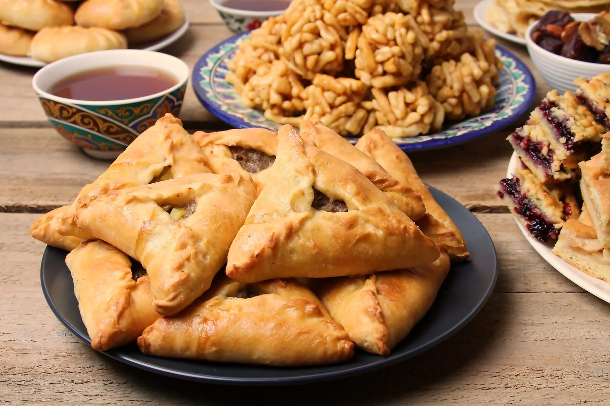
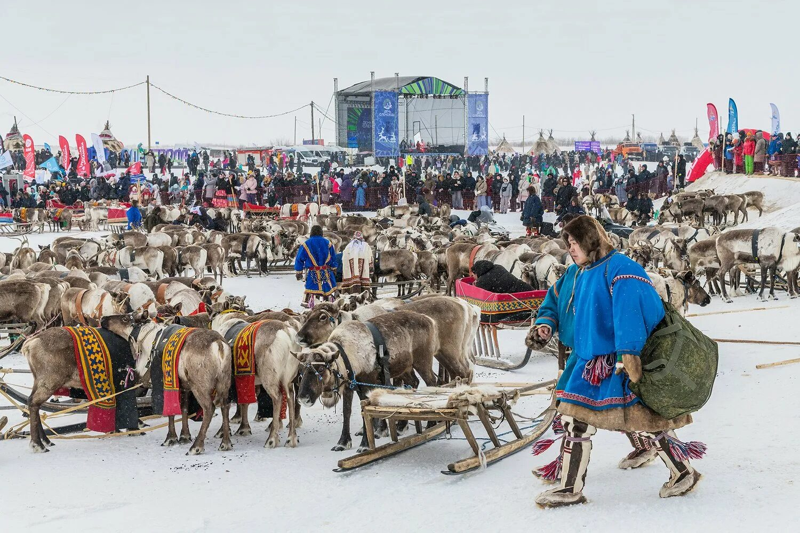

Поволжский стол
Праздничная еда здесь тесно связана с общинностью, ярмаркой и семейным общением.
Раздел 4
Через еду культура рассказывает о климате, празднике, гостеприимстве и семейном ритме. Этот раздел показывает, как блюда становятся частью идентичности и почему национальная кухня помогает лучше понять характер народа.

Культурный стол
Традиционная кухня рассказывает о природе, труде и образе жизни так же выразительно, как костюм или орнамент. Она особенно хорошо показывает, что наследие можно не только изучать, но и буквально чувствовать.
Визуальные акценты
Праздничная еда здесь тесно связана с общинностью, ярмаркой и семейным общением.

На Кавказе еда соединяется с уважением к гостю, этикетом и символикой общего стола.

В Арктике кухня показывает, насколько глубоко культура зависит от природы и маршрута жизни.
Что можно заметить
Набор ингредиентов почти всегда связан с ландшафтом, климатом и образом хозяйства региона.
У многих блюд есть не только рецепт, но и закрепленное место в праздничном календаре семьи.
Красота стола, форма блюда и порядок угощения тоже становятся частью культуры.
Через кухню легче всего увидеть, как традиция превращает гостя в важную часть общего пространства.